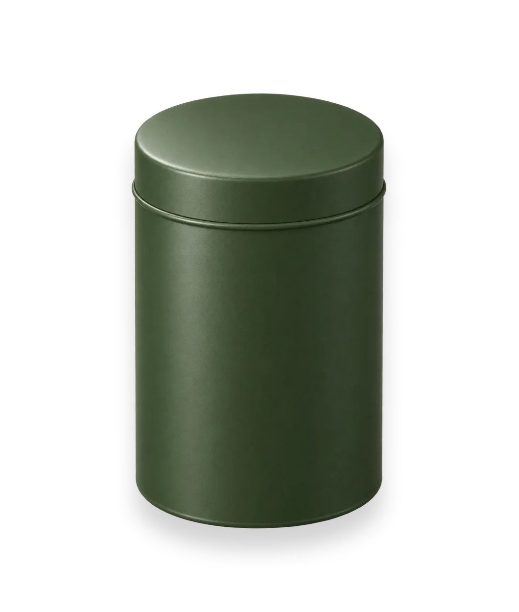
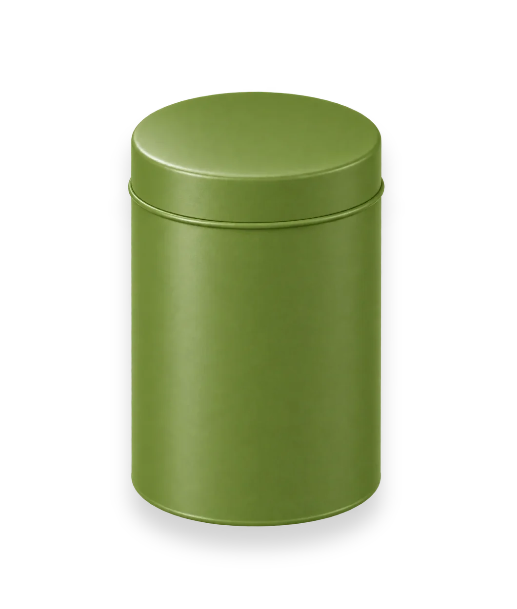
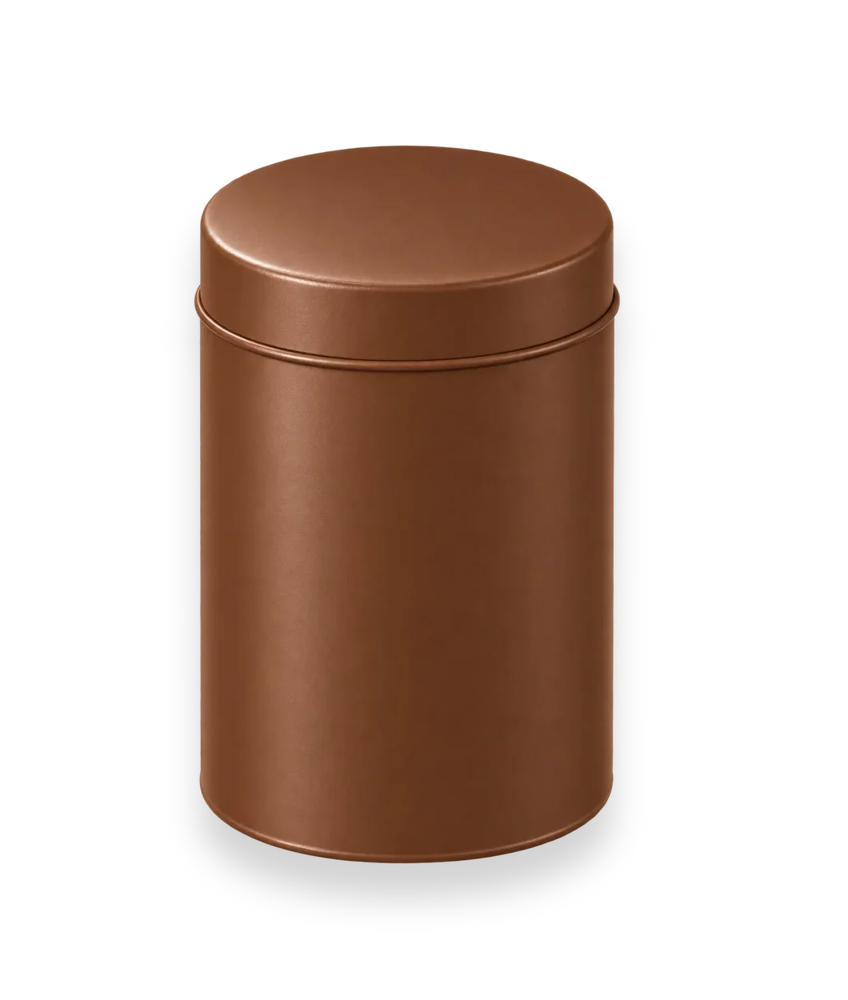
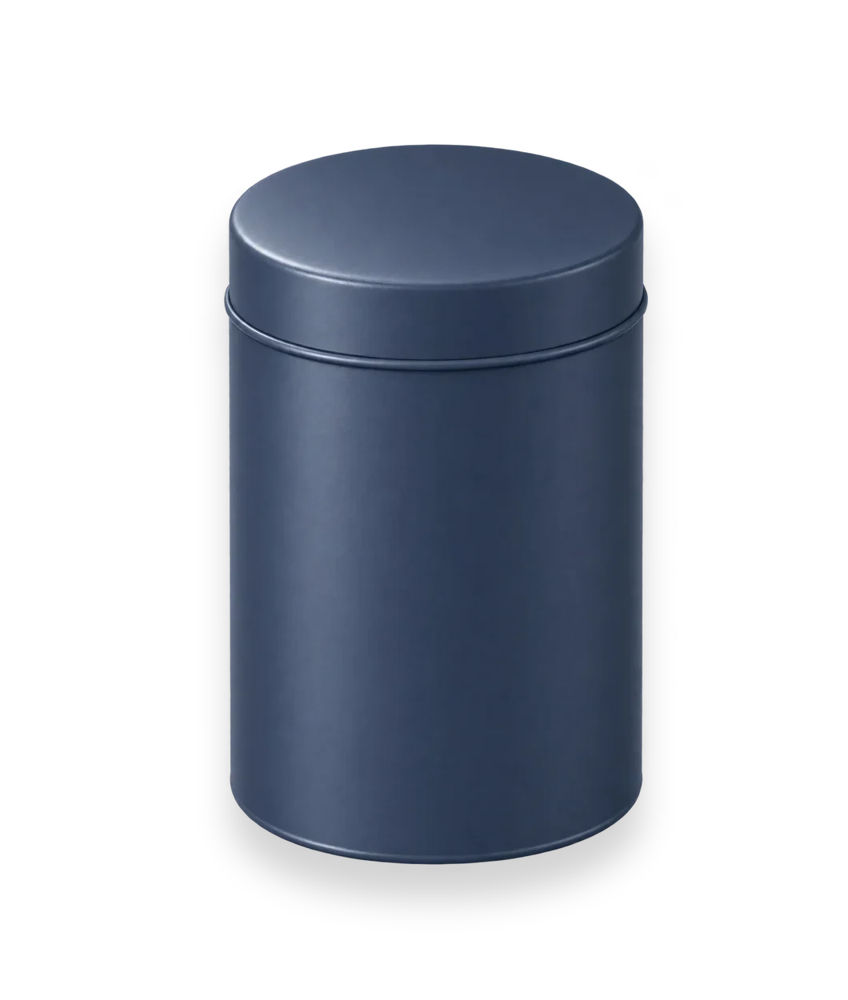
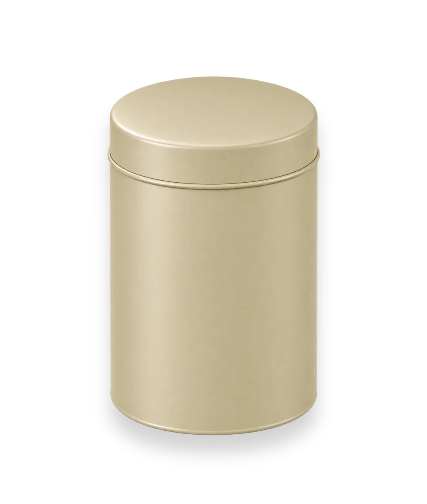
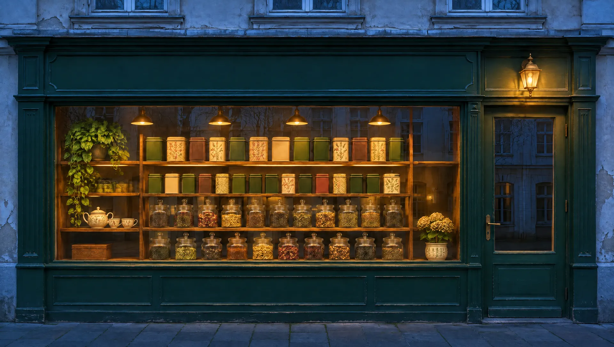
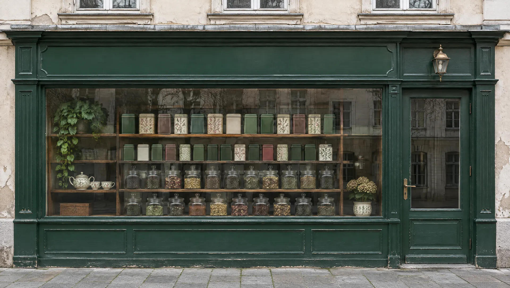
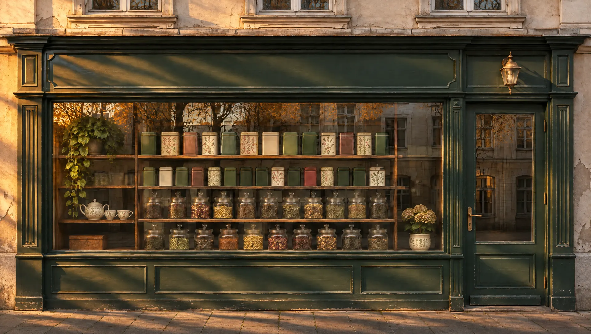
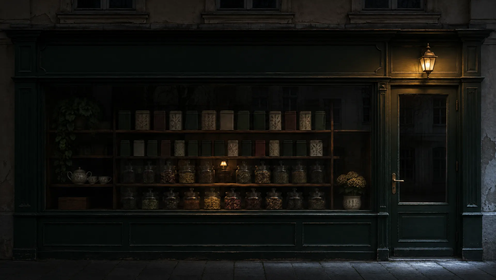
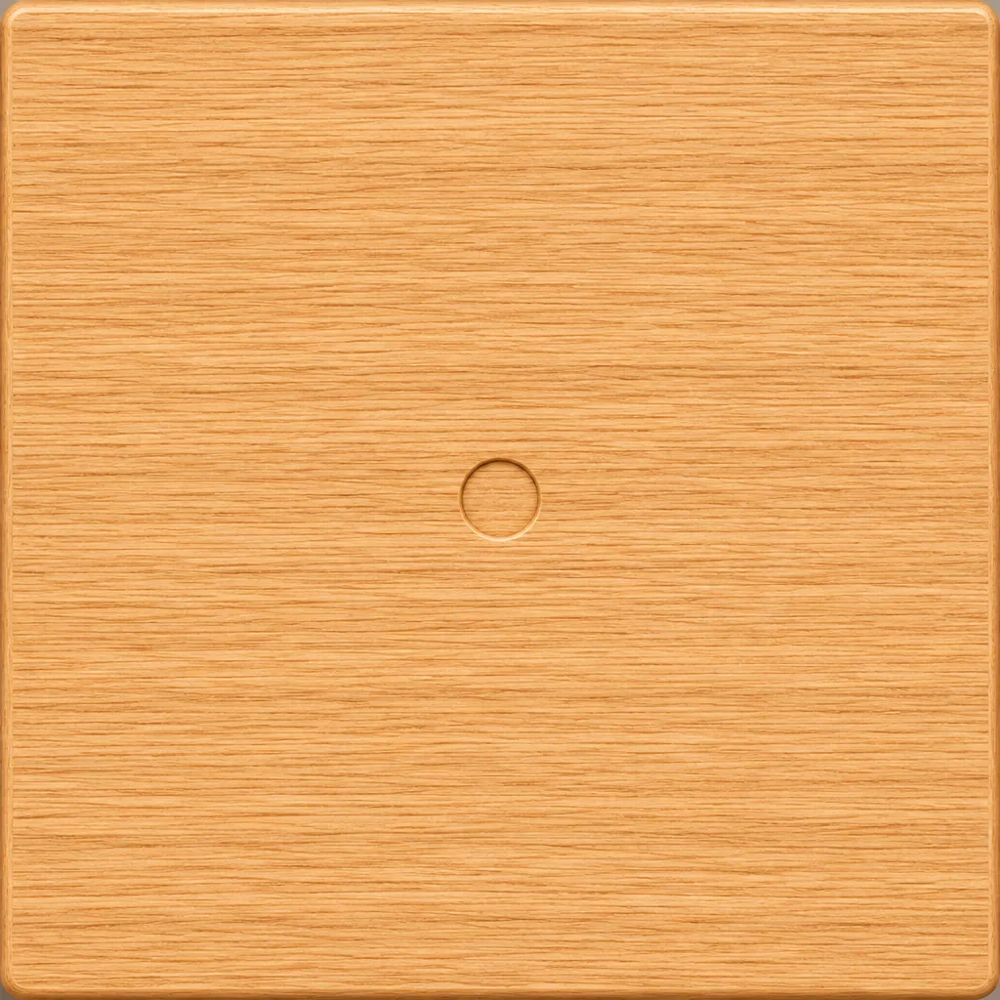

Scroll to explore
Leaves, rolled tight.
Mgła is a small tea house. Every tea here is weighed to the gram and brewed by the clock.
Book a tastingWater at 75 °C.
Hot enough to open a sencha, cool enough to keep it sweet.
Sixty seconds.
The first steep is the shortest. The same leaves give three more.
Then the room goes quiet.
Five teas on the shelf, a nine-cell tasting box, and a window that changes all day.
Five teas, five tins.
Scroll to change the tea. The room takes the colour of the tin.
GYOKURO

55°water
SENCHA

75°water
HOJICHA

95°water
EARL GREY

95°water
GENMAICHA

85°water



Nine teas in one oak box.Ten grams of each, enough for three pots. Scroll to lift the lid, then walk through the cells.

- SenchaSteamed green, first picking.
- Silver needleWhite tea, only the unopened buds.
- KeemunBlack tea with a cocoa finish.
- RooibosRed bush, no caffeine, for children too.
- HojichaRoasted stems, low caffeine.
- GenmaichaGreen tea with puffed rice.
- MatchaStone-ground, whisk 2 g in 70 ml.
- Blue Earl GreyBergamot and cornflower petals.
- ChamomileWhole flowers, for after ten.
Book a seat at the counter.
Saturday tastings at 11:00, 12:00 and 13:00. Six people, five teas, one hour. 90 zł, the tasting box to take home is included.